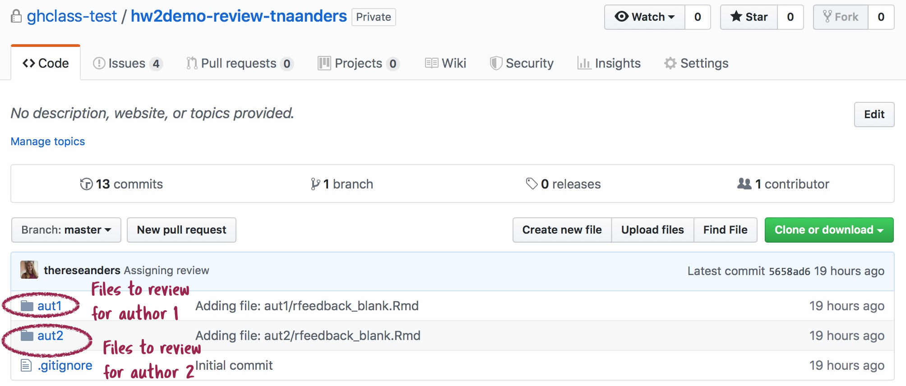

Peer review instructions for students
Therese Anders and Mine Çetinkaya-Rundel
2020-08-26
Source:vignettes/articles/peer_students.Rmd
peer_students.RmdWelcome to Peer review 101, Summer 2019! This course uses GitHub as a platform to submit your assignments and to give/receive feedback from your peers. Please read the instructions below.
Before the start of the assignment
Create GitHub account
If you do not have one already, please create a free GitHub account.
Assignment
Your instructor will create a private repository on the ghclass-test organization and place the assignment files into this repository. The repository might be called something like ghclass-test/hw1-username.
To start the assignment, please complete the following steps:
- Clone the assignment repository to a local repository by creating a new RStudio Version Control project
- Complete the assignment
- Commit and push your work to the remote assignment repository
Things to keep in mind
- Save in repository: Please save your work only in the assignment-specific repository created by the instructor. The files will automatically be moved to your peer reviewers once the assignment is complete. If you save files outside this repository, your work may not be submitted for review and grading.
- Don’t change file names: Please do not change the names of files in your repository.
Review
Once the assignment is complete, the review process begins. Your instructor will create a second repository for you, named something like ghclass-test/hw1-review-username.

The new repository contains folders for each of your peers’ assignments you are asked to review. Each folder also contains a review form for you to fill out.

You instructor will open an issue in this new repository with a check list of tasks to complete. You will go through the following steps:
- Clone the review repository to a local repository by creating a new RStudio Version Control project
- Review and give comments on the assignment of each of your peers
- Fill out review form
- Commit and push your work to the remote review repository
Review assignment
When reviewing your peers’ work, please give them helpful comments and suggestions directly in their assignment file.
Fill out review form
The review form is a RMarkdown (.Rmd) document. The review form contains review questions to answer for each of your classmates’ assignments. On the top of the review form, you will find a so-called YAML header. The review form contains [INSERT SCORE] placeholders in the params section of the YAML, for example called q1_score and q2_score. The YAML header might look like this:
---
title: "Reviewer feedback form"
output: github_document
params:
q1_score: [INSERT SCORE]
q2_score: [INSERT SCORE]
---Please replace [INSERT SCORE] for each of the q*_score parameters with the number of points you give the author for each question. A completed YAML header should look like this:
---
title: "Reviewer feedback form"
output: github_document
params:
q1_score: 3
q2_score: 1
---Engage with feedback
When review process is complete, your instructor will pass your peers’ feedback back to your assignment repository. Each reviewer’s feedback will be saved in a separate folder, for example called rev1 for reviewer 1’s feeback, rev2 for reviewer 2’s feedback, and so on.

To finish the assignment, please complete the following steps:
- Pull the changes from your remote assignment repository into the local copy of your assignment repository
- Review the changes the reviewer made directly in your assignment
- Fill out the rating form for the feedback you received from your peers
- Commit and push your work to the remote assigment repository
You instructor will open an issue in your assignment repository with a check list of tasks to complete.
Fill out rating form
The reviewer folders that are created on your assignment repository contain a RMarkdown document with a short questionnaire asking you to rate the feedback you received from your peers. Please enter your score for each category in the YAML header of the form, replacing the NAs. A completed form might look like this.
---
title: "Author feedback form"
output: github_document
params:
helpfulness: 3
accuracy: 2
fairness: 4
---